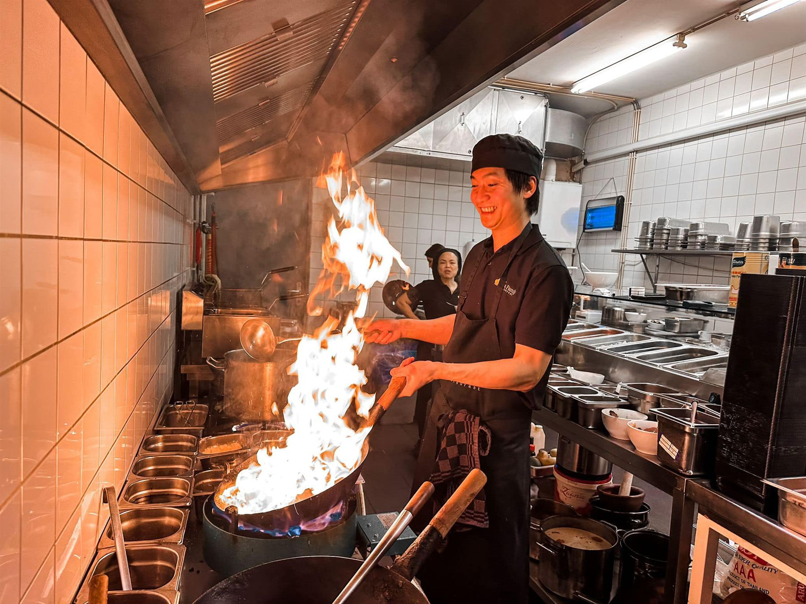
Thais restaurant aan het Damplein, Leidschendam
De smaak van Thailand
Van woensdag tot en met zondag tovert onze chefkok Jack met zijn team de meest uitgelezen gerechten op tafel. Vers bereid, op hoog vuur, honderd meter van het sluisjesgebied.
- Open
- wo t/m zo, 16:00–21:30
- Bellen
- 070-220 21 44
Echt Thais eten, ongedwongen en gezellig
Bij Thai Family willen we u laten ervaren hoe het is om ècht authentiek Thais te eten, in een vooral ongedwongen, gezellige sfeer zoals u die overal in Thailand vindt. Onze recepten en bereidingswijzen gaan tientallen jaren terug.
De Thaise keuken is verfijnd, gevarieerd en vetarm, met uitsluitend verse ingrediënten. Suputtra en haar team heten u van harte welkom; onze ervaren en enthousiaste medewerkers hebben gastvrijheid hoog in het vaandel.
Sawasdee, en eet smakelijk namens Suputtra en haar team
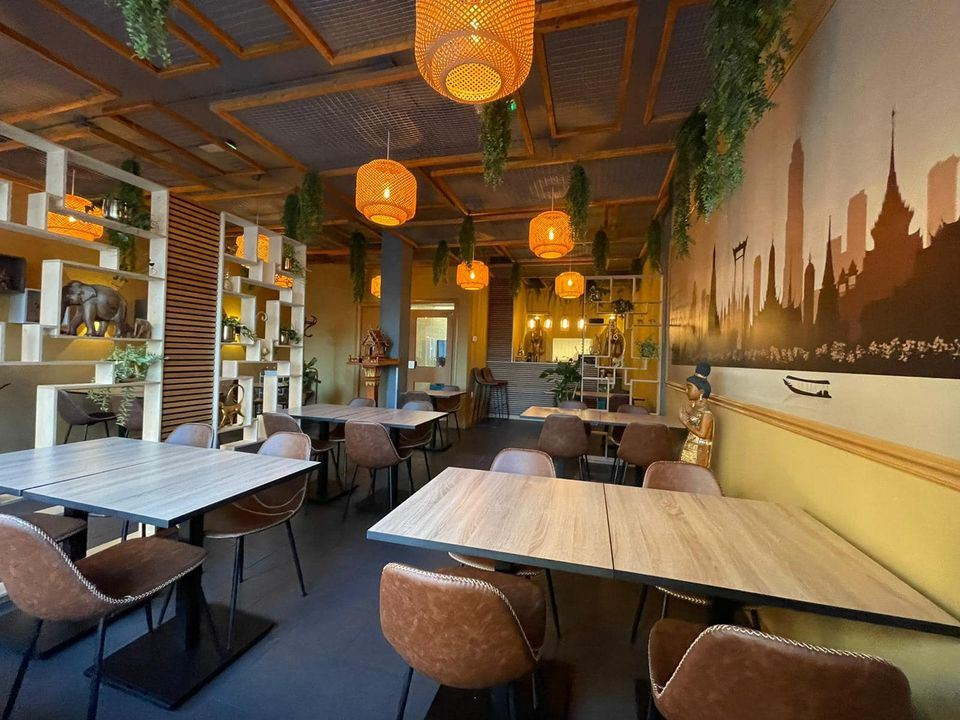
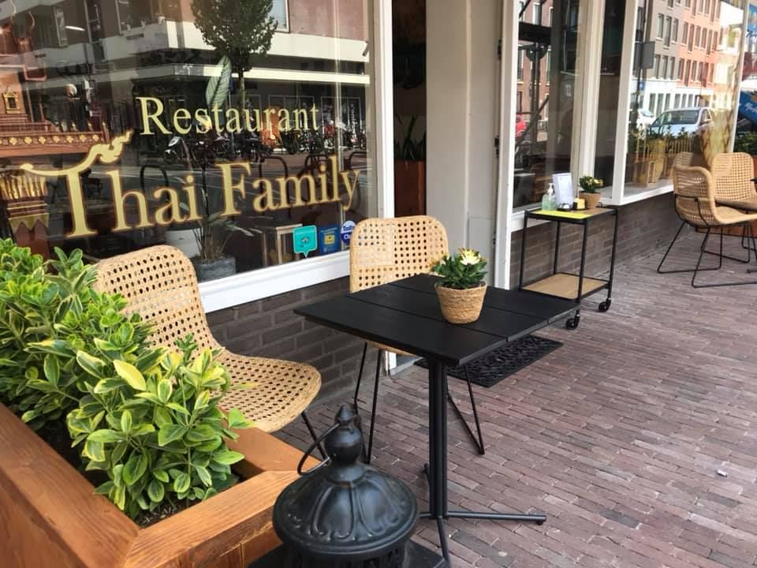
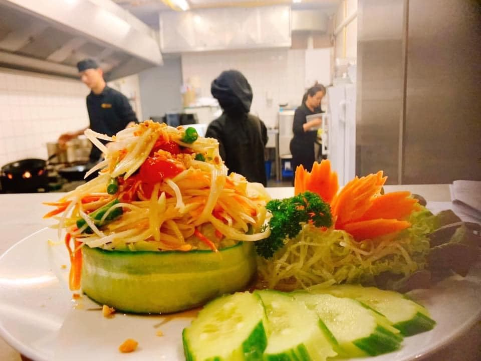
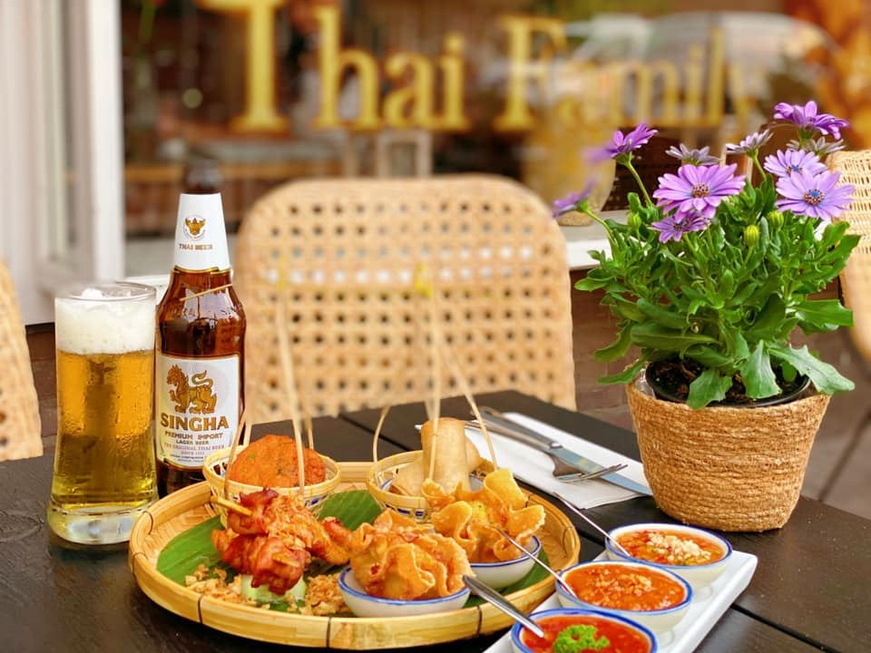
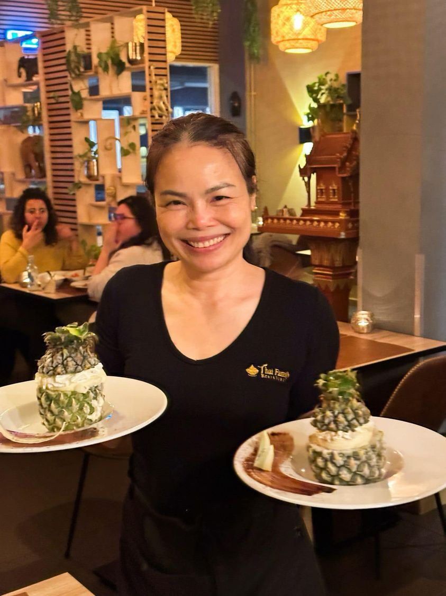
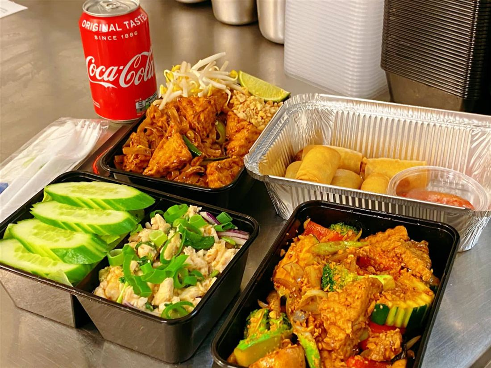
Bestellen of afhalen
Het hele menu kunt u ook thuis eten. Bel ons om te bestellen of af te halen; vraag ons gerust naar de samenstelling van een gerecht als u een allergie heeft.
Woensdag t/m zondag vanaf 16:00. Maandag en dinsdag gesloten.
Catering aan huis of een feest met buffet
Wij zijn ervaren in het verzorgen van catering bij u thuis, en van een buffet voor uw feest in ons restaurant. Verjaardag, familiedag of bedrijfsfeest: informeert u naar de mogelijkheden.
- Catering bij u thuis
- Een buffet voor uw feest in ons restaurant
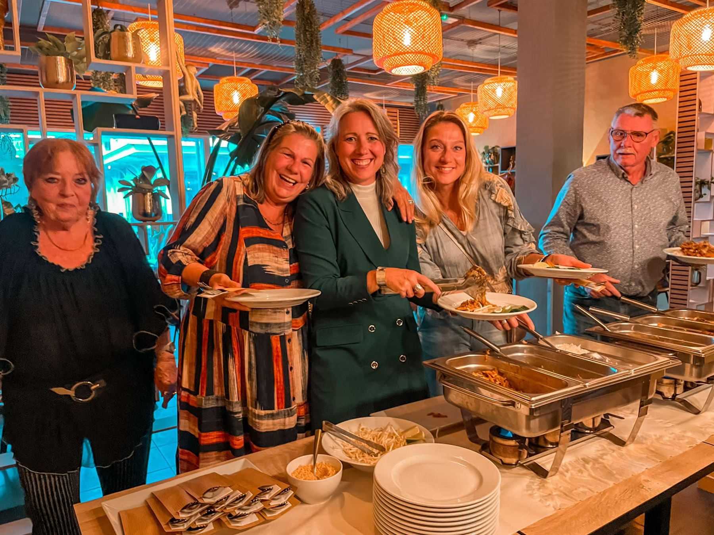
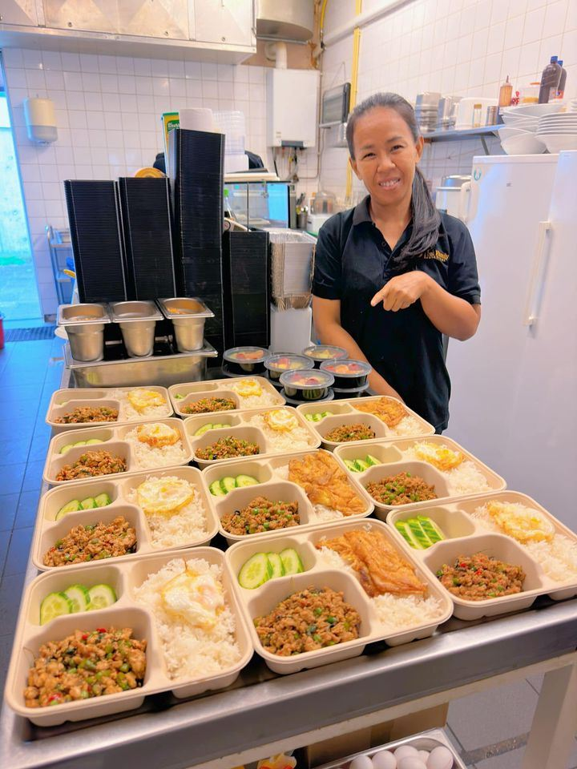
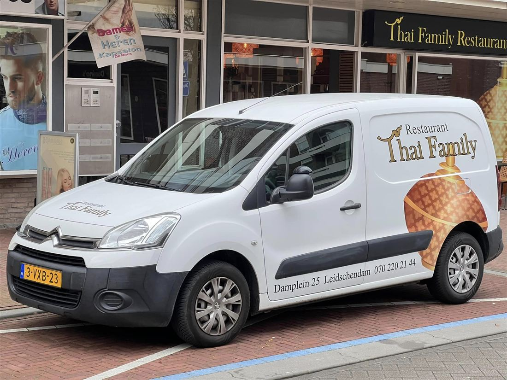
De Thaise keuken: geliefd en gezond
Verse groenten en kruiden gaan maar even mee op hoog vuur, zodat de smaak bewaard blijft. Er wordt weinig olie gebruikt, waardoor de Thaise keuken licht en relatief vetarm is. Lees hieronder meer over de kerries, sauzen en kruiden uit onze keuken.
Kruiden, specerijen en rijst
In Thailand is eten een belangrijk onderdeel van de cultuur. De keuken combineert het beste van de Chinese en Indiase culinaire tradities en is zeer gevarieerd, met tal van ingrediënten, kruiden en specerijen. Thaise gerechten worden over het algemeen gekenmerkt door ‘sweet, sour and spicy’. Houdt u niet van heet? Zeg dan ‘mai phet’, letterlijk: niet heet.
Veruit de meeste gerechten worden in een wok bereid. Rijst is bij alle gerechten het basisingrediënt: in Thailand wordt bij vrijwel al het eten jasmijnrijst geserveerd, een heerlijk geurende rijst die Kauw Hom Mali heet. Naast rijst worden ook veel noedels gegeten, zoals in soepen.
Thaise kerries
Thaise gerechten worden op smaak gebracht met kerries: een mix van verschillende kruiden en specerijen. Er zijn er te veel om op te noemen, maar enkele worden veel gebruikt. Rode kerrie (Keng Ped) is rood door de rode pepertjes en geeft een pittige smaak. Ook de Massaman kerrie (zoete rode kerrie) en de Panaeng kerrie zijn populair.
Thaise sauzen
Een van de meest gebruikte sauzen is vissaus (Nam Pla), een sterk geurende saus die in plaats van zout wordt gebruikt; zout zelf wordt nauwelijks gebruikt. Andere bekende sauzen zijn oestersaus, die een zoete smaak geeft, en sojasaus.
Thaise kruiden
Populaire kruiden zijn Horapa, een zoete basilicumsoort, en Krapao, dat veel in pittige gerechten gaat. De kruiden worden pas op het laatste moment toegevoegd, zodat de smaak optimaal blijft. Verder koriander (Pak-chee), Prik Keenoe (kleine groene en rode pepers), gemberwortel, laos, citroenblad, knoflook en serreh (citroengras), dat gerechten sterker en frisser van geur maakt.
Fruit en eetgewoonten
In Thailand is men gek op tropisch fruit, zoals ananas, banaan, papaja en meloen; fruit wordt vaak als nagerecht geserveerd. Thai eten niet drie keer per dag, maar in vrij kleine porties, ongeveer zeven keer per dag. In de linkerhand een vork, in de rechterhand een lepel.
Een kijkje bij Thai Family
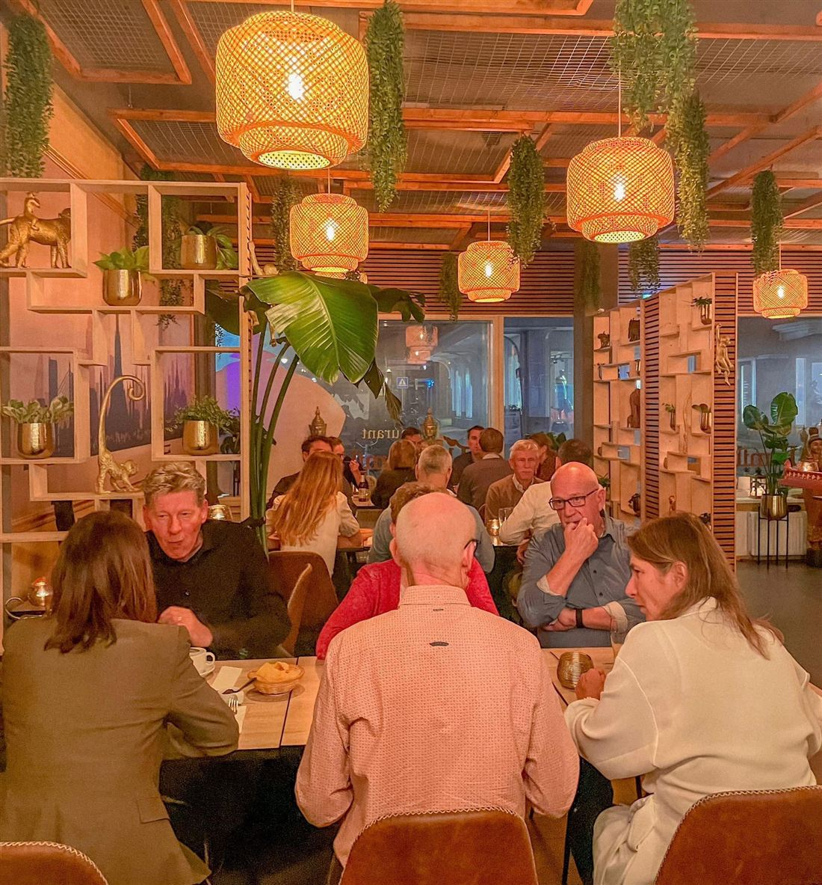
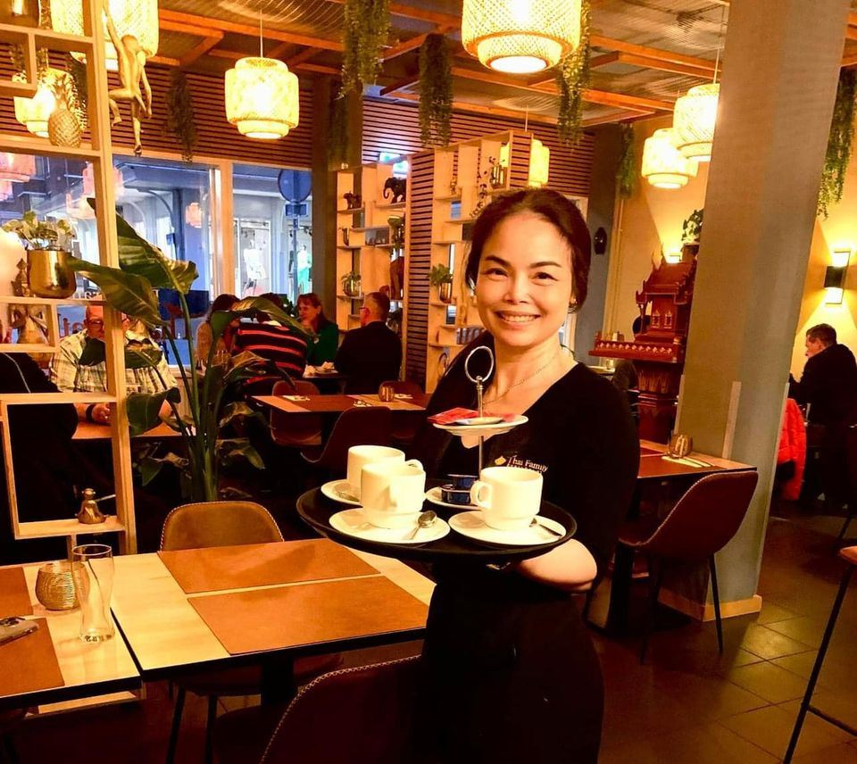
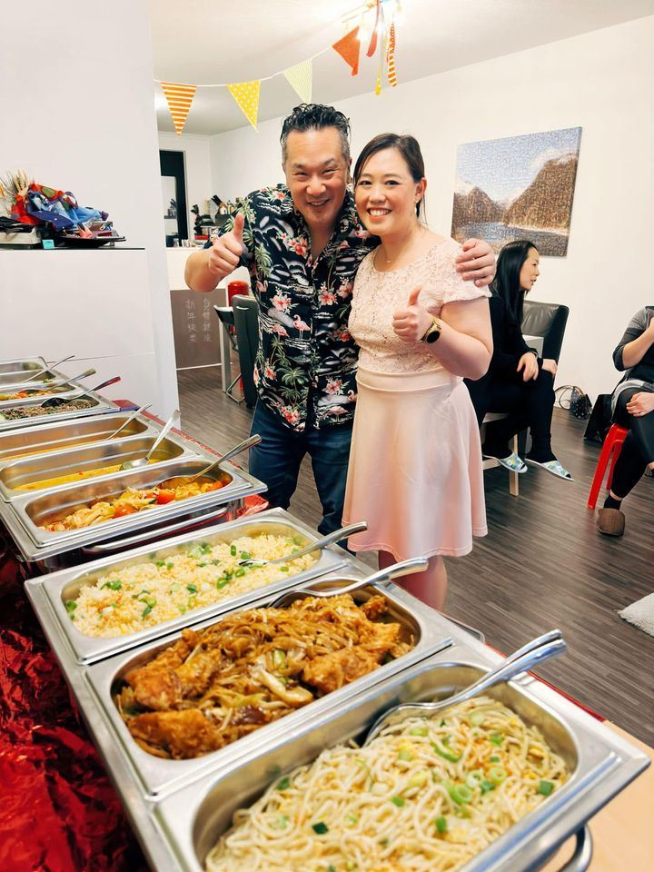
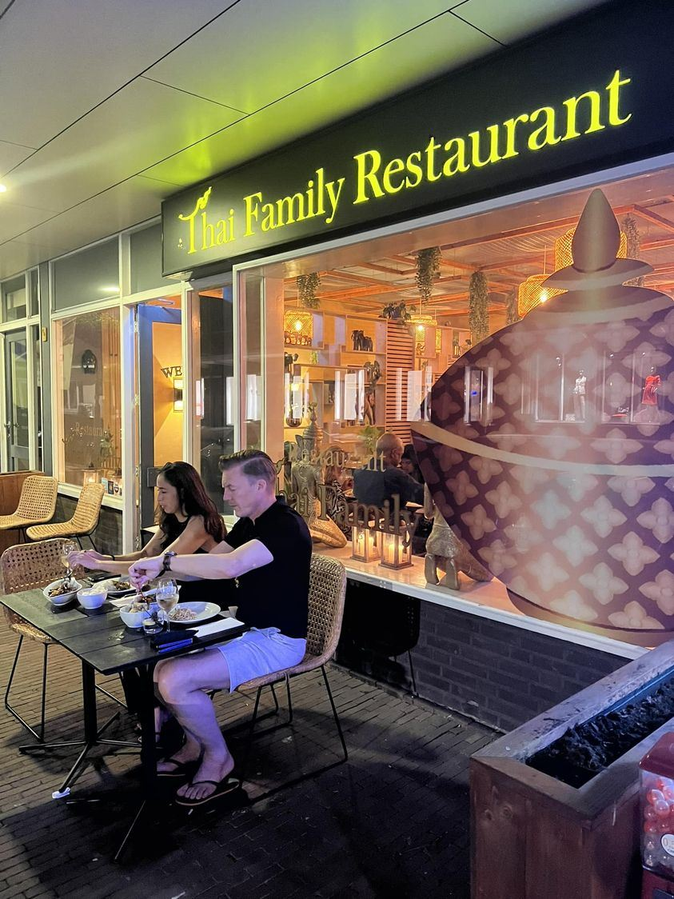
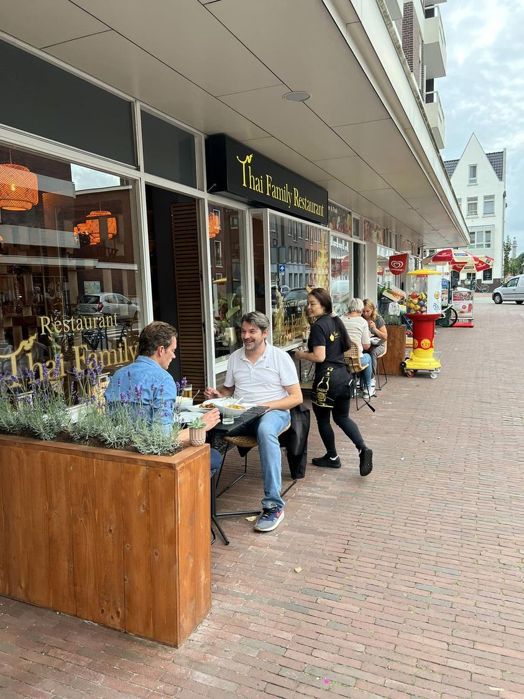
Reserveer uw tafel
Reserveer tijdig uw plekje. Reserveert u voor dezelfde dag? Bel ons dan liever even, want bij drukte kunnen we uw reservering misschien niet op tijd bevestigen.
Kom langs
Restaurant Thai FamilyDamplein 25
2265 AD Leidschendam
070-220 21 44
info@thaifamily.eu
In het historische centrum, 100 meter van het sluisjesgebied.
Openingstijden
| Maandag | gesloten |
|---|---|
| Dinsdag | gesloten |
| Woensdag | 16:00–21:30 |
| Donderdag | 16:00–21:30 |
| Vrijdag | 16:00–21:30 |
| Zaterdag | 16:00–21:30 |
| Zondag | 16:00–21:30 |